Target: https://sansu-seven.vercel.app
Source: aa36adad7dcce77956a891e7917d6a29241ed83a
VITE_BUILD_PLAY_ENABLED=true / VITE_PARK_RENDERER=three / candidate: park-three-resin-v1
Chromium 145.0.7632.6 / Mac Metal。viewportエミュレーションであり実機ではない。320pxのみreduced motion。画像は本番から取得し、編集していない。
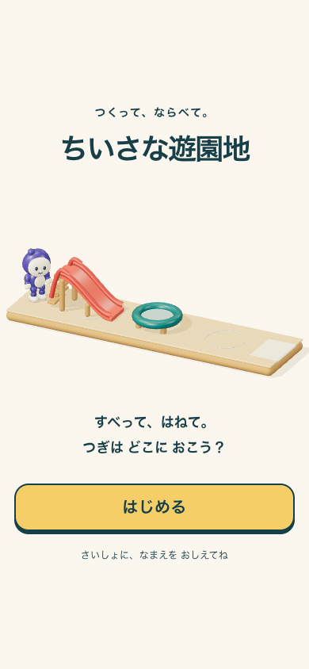
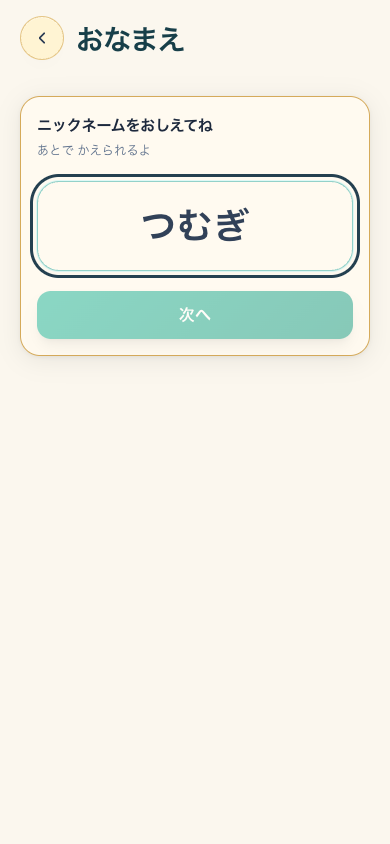
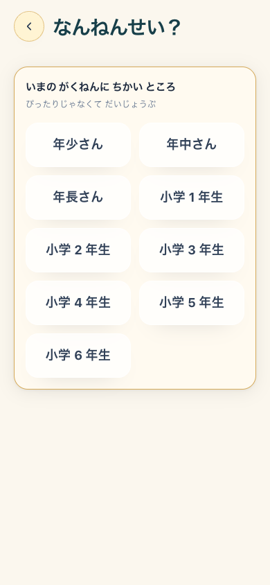
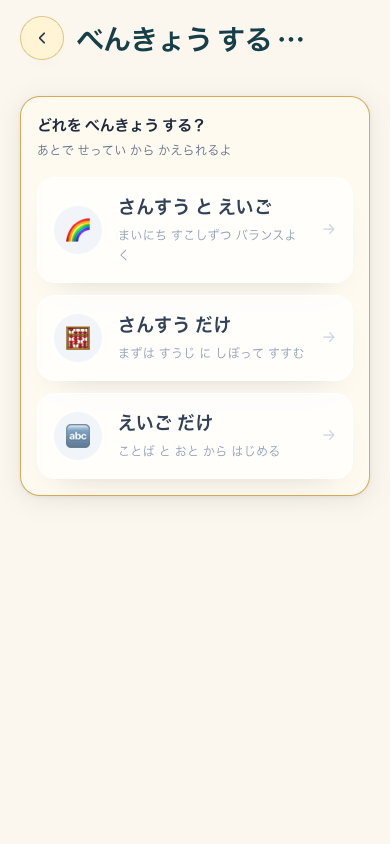
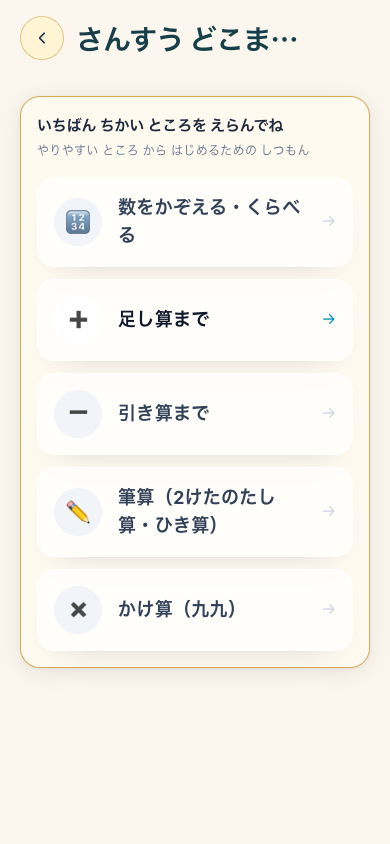
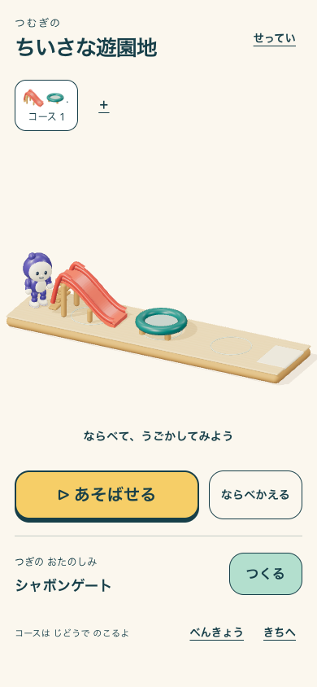
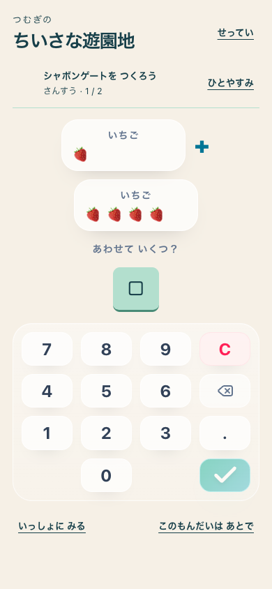
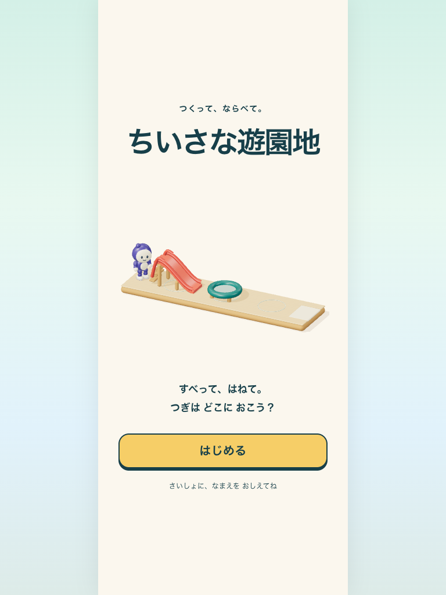
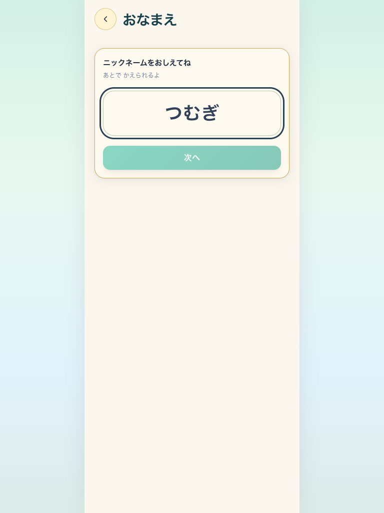
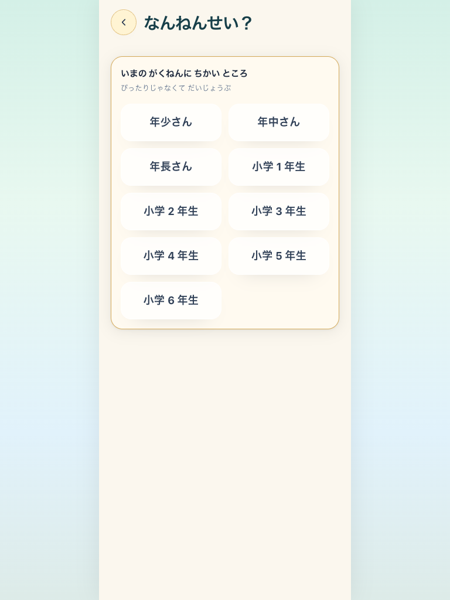
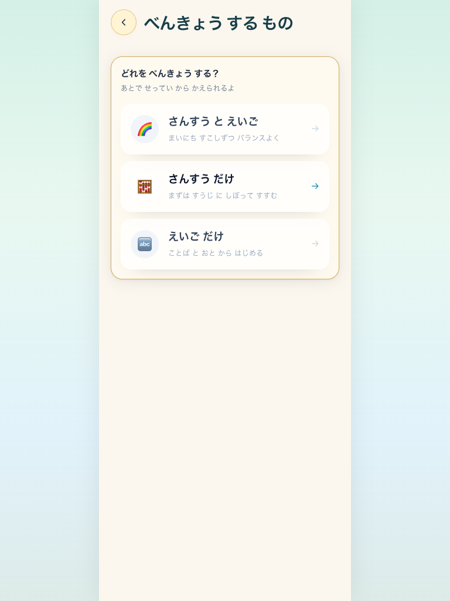
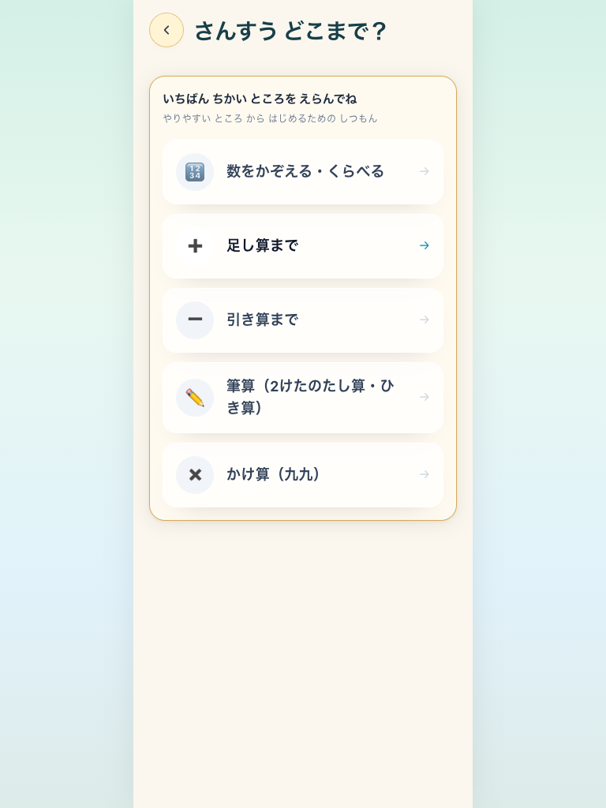
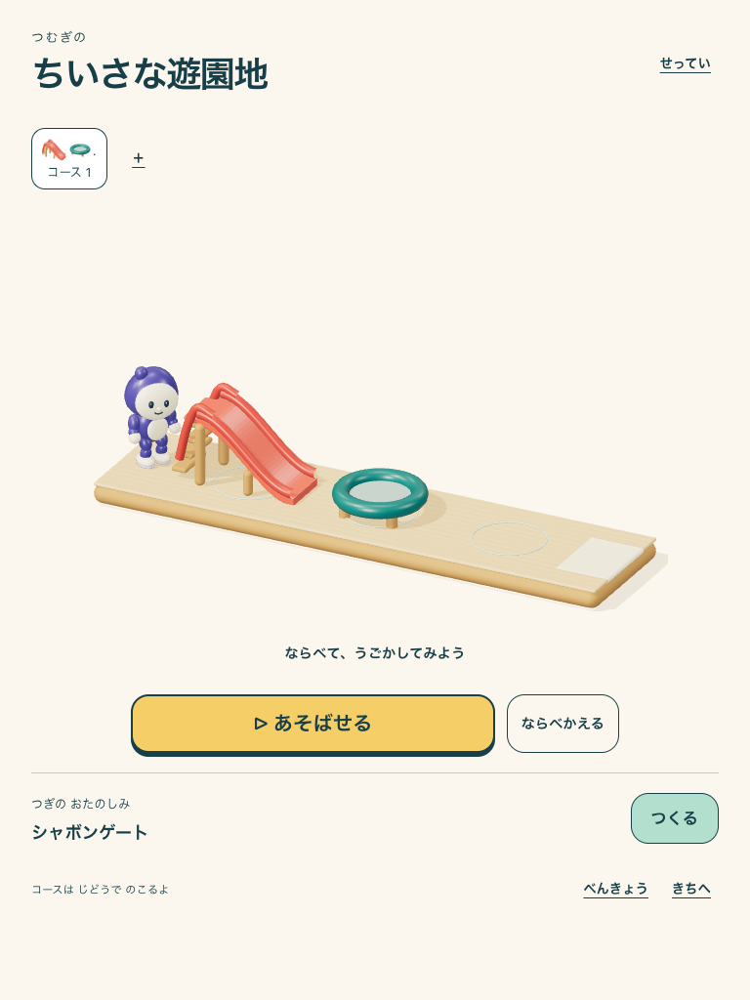
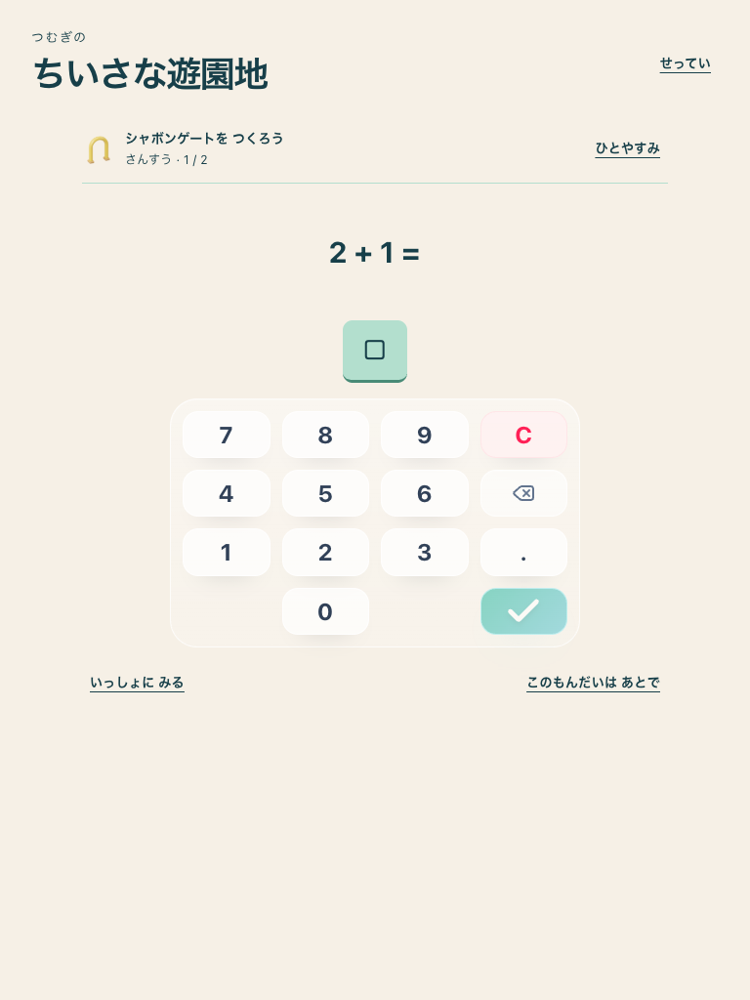
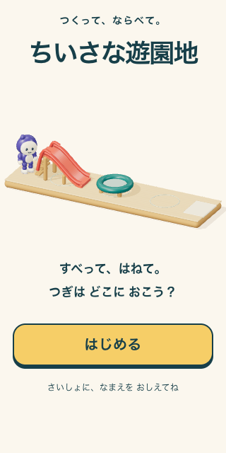
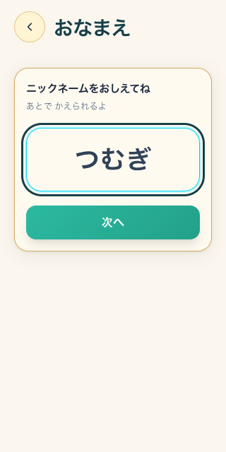
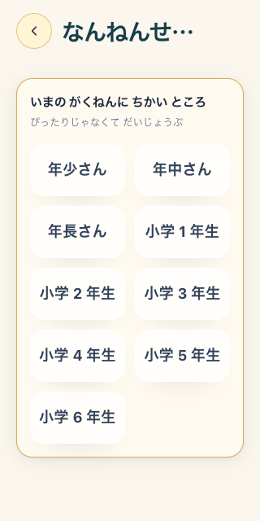
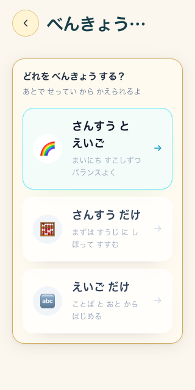
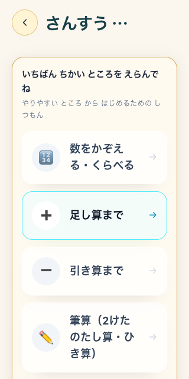
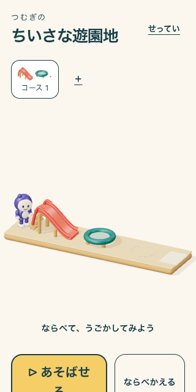
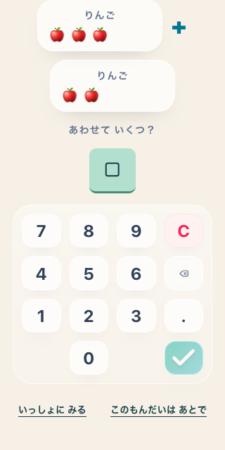